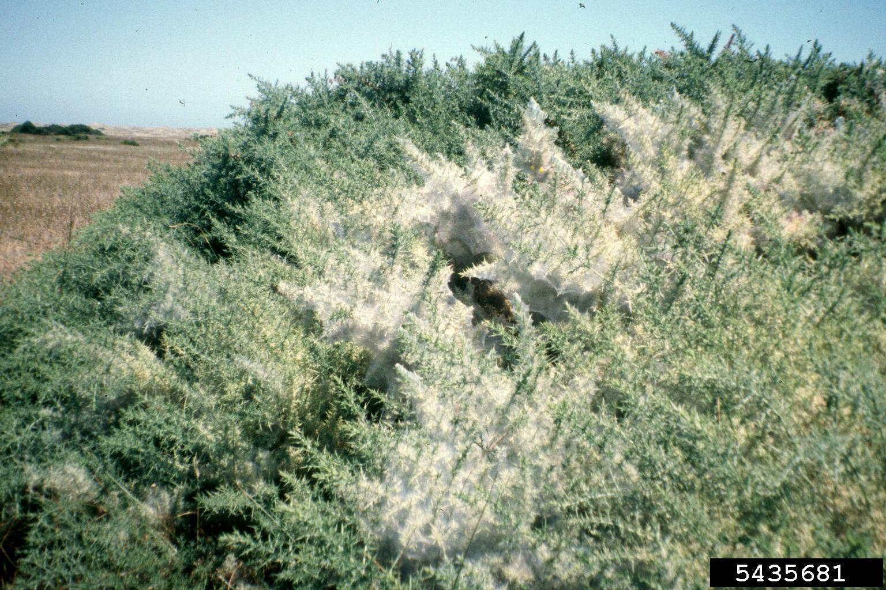

Introduction to Tasmanian Ecosystems

Welcome to the Tasmanian Ecosystem Maintenance training module. This program is designed to provide you with the knowledge and skills needed to work effectively in conservation and ecosystem management across Tasmania's unique environments.
Tasmania's ecosystems range from coastal heathlands to alpine moorlands, each with distinct conservation challenges. As a conservation worker, you'll play a vital role in maintaining these ecosystems for future generations.
Why Tasmania is Special
- Home to ancient Gondwanan species like the myrtle beech (Nothofagus cunninghamii)
- Contains some of the most intact temperate rainforests in the world
- Unique alpine ecosystems found nowhere else
- Critical habitat for endangered species like the Tasmanian devil
Key Ecological Concepts

Biodiversity
Tasmania's biodiversity is supported by its isolation and varied landscapes. Maintaining species diversity ensures ecosystem resilience.
Key Tasmanian species include:
- Endemic plants: Tasmanian waratah, Huon pine
- Threatened animals: Swift parrot, Tasmanian wedge-tailed eagle
Tasmania's isolation has allowed for high levels of endemism, with many species found nowhere else on Earth. Conservation efforts focus on protecting these unique species from threats like habitat loss, invasive species, and climate change.

Disturbance Cycles
Natural disturbances like fire and flood shape ecosystems. Understanding these cycles helps us manage human impacts.
Tasmanian fire regimes vary by ecosystem:
- Moorlands: Frequent low-intensity fires
- Rainforests: Rare catastrophic fires
- Coastal heath: Moderate frequency
Disturbance cycles are natural processes that reset ecological succession. In Tasmania, fire has been a particularly important disturbance agent for thousands of years, with Indigenous fire management creating mosaic landscapes.

Ecological Succession
How ecosystems recover after disturbance. Knowing succession patterns helps guide restoration efforts.
Example: After fire in dry sclerophyll forest:
- Annual herbs and grasses
- Shrubs and resprouting trees
- Mature forest (20+ years)
Understanding succession pathways is essential for effective restoration planning. Restoration ecologists often introduce pioneer species to stabilise soils and create conditions suitable for later successional species.
Threats to Tasmanian Ecosystems
- Invasive species: Gorse, foxes, and Phytophthora dieback
- Climate change: Shifting rainfall patterns and temperatures
- Land use changes: Agriculture, urban expansion, and forestry
- Fragmentation: Isolated habitat patches
Tasmanian Case Studies

Tasman Peninsula Restoration
Coastal heath restoration after agricultural abandonment. Key techniques included gorse removal, native species reintroduction, and erosion control.
Project Overview
The Tasman Peninsula Restoration Project was initiated in 2015 to restore coastal heathland ecosystems degraded by historical agricultural practices. The project covers approximately 200 hectares.
Key Achievements
- Removed gorse from 95% of the target area
- Reintroduced 15 native plant species
- Stabilised erosion on 3km of coastal slopes
- Documented return of 5 native bird species
Lessons Learned
Early community engagement was critical to success. Local volunteers contributed over 2,000 hours to planting and maintenance activities.

Central Plateau Moorlands
Managing peatlands affected by altered fire regimes and climate change through modified burning, visitor management, and hydrology restoration.
Project Overview
The Central Plateau Moorlands Conservation Initiative addresses degradation of Tasmania's unique alpine peatlands caused by changed fire regimes, climate change, and visitor pressure.
Key Interventions
- Modified burning regime mimicking natural fire cycles
- Boardwalks and designated paths to limit visitor impact
- Water retention structures to restore natural hydrology
- Community education programs
Ecological Outcomes
Water tables have risen by an average of 15cm in treated areas, and sensitive sphagnum moss species are recovering.

North-East Invasive Control
Community-led program to control gorse (Ulex europaeus) invasion, achieving an 80% reduction in target areas.
Project Overview
The North-East Gorse Control Program began in 2018 to address the significant impact of gorse invasion on agricultural land and native ecosystems.
Approach
- Coordinated landscape-scale approach across multiple properties
- Cut-stump herbicide application as primary control
- Revegetation with native species and improved pasture grasses
- Monitoring network to track regrowth
Results
An 80% reduction in gorse cover across 1,500 hectares, with pasture quality improving by 40% on average and 12 native plant species returning.
Field Techniques for Ecosystem Maintenance
Essential Skills for CIII CEM

Weed Control
- Gorse: Cut-stump herbicide application
- Pampas grass: Foliar spray herbicide application
- Ragwort: Biological and cultural control

Erosion Management
- Jute matting on slopes
- Revegetation strategies
- Drainage control

Monitoring Methods
- Photo points
- Vegetation transects
- Fauna surveys
Field Kit Checklist
Restoration Planner Simulation
Adjust the variables below to see how different approaches affect restoration outcomes in a Tasmanian dry sclerophyll forest. Each plot in the landscape reflects its own balance of native and invasive cover, soil condition, and moisture.
Restoration Variables
Simulation Results
Adjust the variables and run the simulation to see results.
Knowledge Check
Test your understanding of Tasmanian ecosystem maintenance concepts.
1. What is the most effective method for controlling gorse in Tasmania?
2. Which of these is NOT a key threat to Tasmanian moorlands?
3. What is the first stage of ecological succession after a severe fire in dry sclerophyll forest?
Certificate III Training
AHCECR301 – Maintain Native Ecosystem Areas
Ready to dive deeper into practical ecosystem maintenance?
Access our comprehensive competency-based training materials specifically designed for the Certificate III in Conservation and Ecosystem Management.
What you'll find:
- Step-by-step competency materials
- Tasmanian legislation and regulations
- Practical activities and assessments
- Flashcards and self-check quizzes
- Field techniques and safety procedures
Access Training Materials
Opens in a new tab for focused learning
Additional Resources
Glossary of Terms
- Dieback
- The gradual deterioration of health in trees or plants, often caused by pathogens like Phytophthora.
- Ecological Succession
- The process of change in the species structure of an ecological community over time.
- Fire Regime
- The pattern, frequency, and intensity of the fires that prevail in an area over long periods.
- Gondwanan Species
- Plants and animals whose evolutionary history traces back to when Tasmania was part of the supercontinent Gondwana.
Further Reading
- Tasmanian Land Conservancy publications
- NRE conservation guidelines
- Bushcare and Landcare Tasmania resources